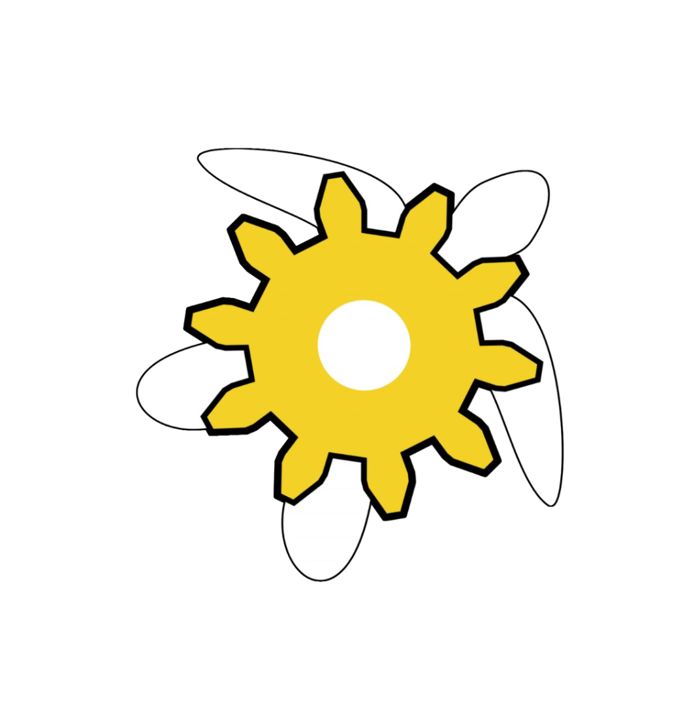
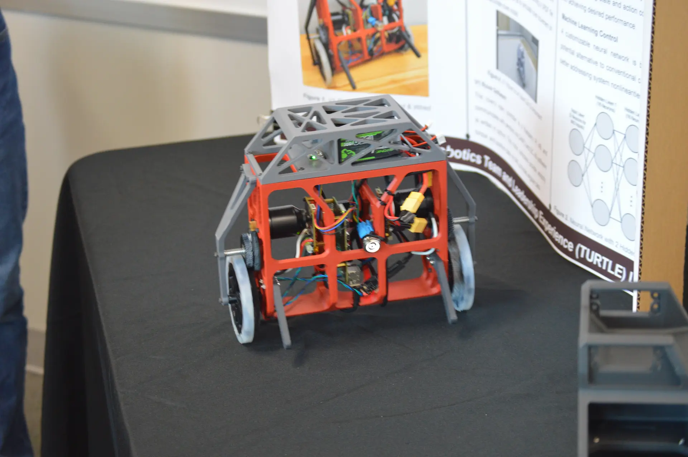
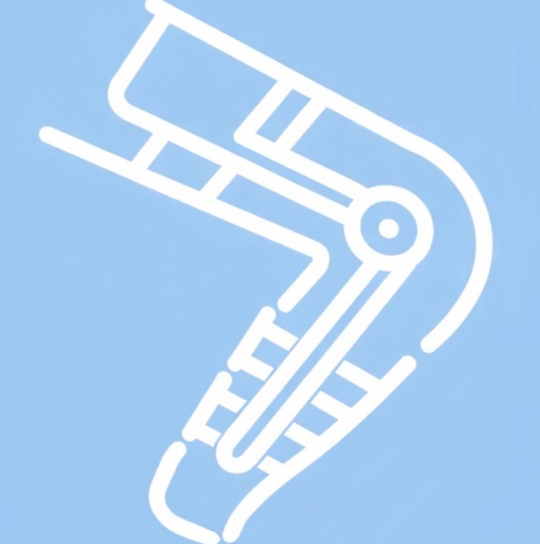

Projects & Experiences
I like to keep myself busy

Internal VP of TURTLE Robotics
Aug 2024 – Present
Overseeing internal operations of the largest student-led robotics organization in Texas.
→Portfolio Webpage
Apr 2024 – Present
This website.
Built with TailwindCSS. Hosted on Cloudflare Pages. Uses Umami for
analytics. Catppuccin color theme.

Self-balancing Rovers (BLNC)
Aug 2025 – Dec 2025
Developing inverted-pendulum self-balancing rovers capable of transporting payloads across varied terrain.
→
Team Myotronic
Jan 2026
48-hour intensive biomedical engineering design competition. Developed a business model using a lower exoskeleton for rehabilitation assistance for post-op patients with muscle atrophy.
→OLSN
Jan 2026 – Present
Myoelectric prosthetic hand designed and built for a local boy. Working on embedded software for EMG signal driven motor control.
→
Disaster Response Observation Network (DRON)
Jan 2025 – Present
Mechanical systems lead.
Leveraging UAVs to gather intelligence during structural
fires and aide first responders in scene assessment.
Human-Empowering Robotics and Control (HERC) Lab
Jan 2025 – Present
Strength amplification arm project at Texas A&M University under the HERC Lab.
→
Elysium 2 Test Stand
Feb 2025 – May 2026
Flame diverter and structural design for a 1,500 lbf liquid rocket engine test stand.
→
TURTLE Knowledge Base
Aug 2025 – Present
An open-source knowledge base for the largest student-led robotics org in Texas. Contains documentation on the common tools, software, and hardware used in our projects.
docs.turtlerobotics.org →